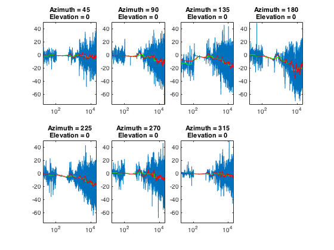

Contents
Description of Code
Definitions and User Inputs
fs = 96000;
sound = 'u';
repeat = 1;
Analyze the z plane
disp(sprintf('\nAnalyzing the Z-Plane'));
figure;
x = 1;
l = 2;
m = 4;
for phi = 45:45:315
azimuth = phi;
elevation = 0;
normalized_filename = sprintf('%s_%d_%d_%d_N.wav', sound,...
repeat, azimuth,elevation...
);
test_filename = sprintf('%s_%d_%d_%d_T.wav', sound,...
repeat, azimuth,elevation...
);
disp(['Comparing ' normalized_filename...
' with ' test_filename '']);
PlotComparasonSpectrum(normalized_filename,...
test_filename, fs, x, l, m);
plotTitle = sprintf('Azimuth = %d\nElevation = %d',...
azimuth, elevation);
title(plotTitle);
x = x + 1;
end
Analyzing the Z-Plane
Comparing u_1_45_0_N.wav with u_1_45_0_T.wav
Comparing u_1_90_0_N.wav with u_1_90_0_T.wav
Comparing u_1_135_0_N.wav with u_1_135_0_T.wav
Comparing u_1_180_0_N.wav with u_1_180_0_T.wav
Comparing u_1_225_0_N.wav with u_1_225_0_T.wav
Comparing u_1_270_0_N.wav with u_1_270_0_T.wav
Comparing u_1_315_0_N.wav with u_1_315_0_T.wav
